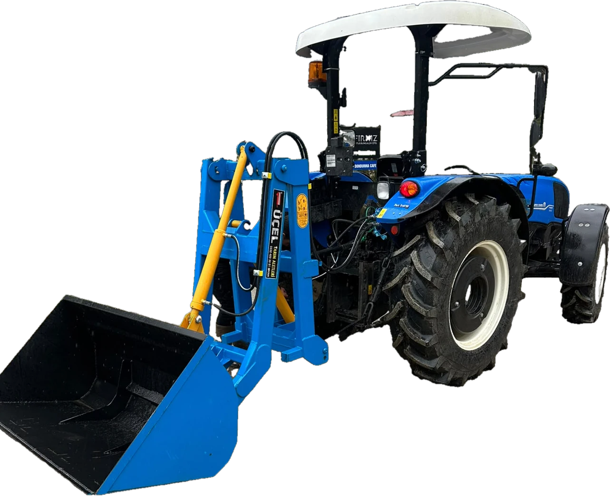

ÜRÜN KATALOĞU 2026 · GÖKSUN
ÜÇELTARIM ALETLERİ
Tarlada da,
yolda da sağlam iş.
Aletlerimizi Göksun’daki atölyemizde kendimiz üretiyoruz.

Kendi imalatımızRömork · Kepçe · Su tankeri · Pulluk · Kültivatör · Tapan · Gübre serpme
ÜRÜN KATALOĞU 2026 · GÖKSUN
Aletlerimizi Göksun’daki atölyemizde kendimiz üretiyoruz.
ÜRÜN KATALOĞU 2026 · GÖKSUN
Aletlerimizi Göksun’daki atölyemizde kendimiz üretiyoruz.
 Yaylı kültivatörTarım römorku
Yaylı kültivatörTarım römorku
Asistan kepçe